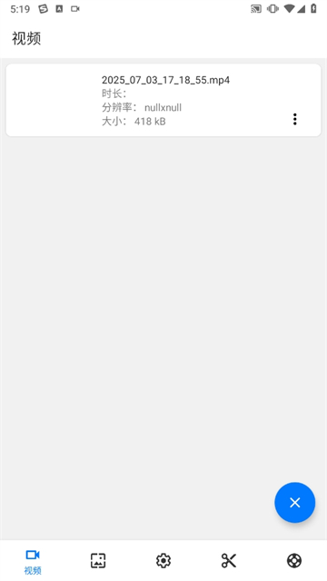
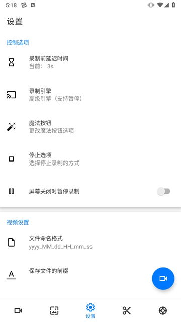

Screen Recorder 踩坑实录：录屏这件事看着简单，其实暗坑不少
用 Screen Recorder 录屏大半年，遇到过有声无画、悬浮窗消失、通话录不到声等奇葩问题，把这些坑逐个拆解，帮你少走弯路。
说实话，第一次从官方下载拿安装包装好，又在screen recorder官网上看了它的功能介绍后，我以为这就是个"按一下就录"的简单工具——屏幕亮起来、点开始、录完停掉，能有什么难的？结果用了三个月，从录游戏到录教程再到想录个微信通话，坑一个接一个地踩，好几次差点卸载重装。
今天把这些实打实撞到过的坑捋一捋，每个坑讲清楚我当时看到什么、后来搞明白为什么、以及到底怎么救。希望你看完之后能绕开这些我摔过的地方。
坑一：通话录屏——为什么只有画面没有声音
这个坑我印象最深。那天想录一个 WhatsApp 语音通话的教程，提前把各种权限都开好了，点击录制，跟对方聊了十分钟，停下来回放——画面清清楚楚，但声音完全没录进去。对方的声音没有，我自己说话的声音也没有，整个视频像哑了一样。
我第一反应是权限没开全，回去检查麦克风权限、存储权限、悬浮窗权限，全是允许。重启应用、重启手机，还是一样。差点就发邮件给开发者问是不是 bug 了。
后来才搞明白，这根本不是 Screen Recorder 的问题，是通话类 APP 的麦克风独占机制。当 WhatsApp 或微信进入通话状态，它会向系统申请"独占"麦克风硬件——意思是，这个麦克风我说了算，其他应用谁都别想用。Screen Recorder 的麦克风录音请求直接被系统拒绝，录不到我的声音。那对方的声音呢？对方的声音走的是他的麦克风 → 网络 → 我的扬声器，Screen Recorder 从扬声器"抓"声音需要用内部声音录制功能，但我当时没开。

解法要看你的手机系统版本。如果是安卓 10 及以上，还好一些——开内部声音录制就能捕获扬声器输出的声音，对方的声音能录到，但因为麦克风被通话 APP 占着，你自己说话的声音还是录不到。如果是安卓 9 及以下，内部声音 API 都没有，只能录到纯画面，声音全没。
实在想录通话的话，有个折中办法：开扬声器外放，把手机音量开到最大，然后用另一台设备从侧面收环境音。听起来很土，但能用。或者干脆放弃声音，录完视频后期自己配音解说。
坑二：悬浮窗不见了——录到一半发现停不下来
第二个坑发生在一次游戏录制中。我正在玩一款需要连续操作的手游，录了大概二十分钟，想暂停喝口水——抬头找那个圆形的悬浮窗，不见了。
游戏占满了整个屏幕，我又不想切出游戏界面（切出去画面就断了），只能硬着头皮玩到结束，然后赶紧切回 Screen Recorder 点停止。那次录出来的视频多了十分钟没用的游戏内容，最后不得不剪掉。
之后查了一下才知道，悬浮窗消失一般有两种原因。第一种最常见：手机清理后台的时候把 Screen Recorder 的悬浮窗权限回收了。小米、华为这些品牌的系统优化比较激进，有时候会在你不注意的时候把"非当前活跃应用"的特殊权限关掉。第二种是某些全屏应用（比如游戏、视频播放器）会主动请求"覆盖所有界面"，把悬浮窗压到后面去了。

怎么防？首先，在手机设置里把 Screen Recorder 加到"白名单"或"不清理列表"里——不同品牌叫法不一样，小米叫"应用保护"，华为叫"允许后台活动"。其次，录屏前先确认悬浮窗真的出现了：点开始录制之后，别急着切目标应用，先在主屏看看那个圆形魔法按钮是不是挂在那儿，确认无误再切。如果还是经常消失，可以试试在 Screen Recorder 的设置里把悬浮窗的"优先级"调到最高。
还有一种情况是权限压根没开对。有些手机的悬浮窗权限有好几个层级——"显示在其他应用上方"、"弹出窗口"、"悬浮球"——名字不一样但其实是同一个东西。按自己手机的品牌去找对应的入口：小米在"应用设置 → 应用管理 → 权限管理 → 显示弹出的窗口"，华为在"应用和服务 → 权限 → 悬浮窗"，OPPO 在"应用管理 → 权限 → 悬浮窗"，vivo 在"应用与权限 → 权限管理"里。找不到的话直接在设置顶部搜"悬浮窗"，系统会帮你定位。
坑三：录完发现没开始——通知栏点错了
这个坑比较蠢，但我确实犯过。Screen Recorder 在通知栏有个快速启动的磁贴，我以为点一下就开始录了，实际它是先打开设置面板让你确认参数，录屏还要再点一次那个蓝色的圆形按钮。结果我点完通知栏就切去做别的了，过了半小时回来发现根本没在录。
还有一次是录屏到一半想快速暂停，手指习惯性地去点通知栏的 Screen Recorder 图标——一点，直接把录制给停了。原来通知栏的图标点击行为是"停止并打开应用"，不是"暂停"。
Screen Recorder 的通知栏交互确实不太直观，解决方案也简单：录屏的时候别碰通知栏里的 Screen Recorder 图标。要控制录制就用悬浮窗，暂停、继续、停止都在那个圆形按钮上，点它就对了。如果悬浮窗也看不到，拉通知栏的时候别去点 Screen Recorder 的图标——看一眼它的状态（是"正在录制"还是"已停止"）就好。
坑四：视频卡顿丢帧——不是手机性能的锅
有段时间录出来的视频偶尔会有卡顿感，画面一顿一顿的，以为是手机性能不够。清了后台、重启了手机，还是间歇性出现。
最后发现是录制参数设置的问题。我当时把分辨率调到了 2K、帧率调到了 60fps、码率拉到了 16Mbps——参数是拉满了，但手机根本扛不住。安卓系统在录屏的时候需要同时做三件事：捕获屏幕每一帧、编码压缩成视频格式、写入存储。如果参数设得太激进，编码速度跟不上屏幕刷新速度，就会丢帧，表现出来就是画面卡顿。
解法很实在：别盲目追参数，按手机实际情况调。我后来翻了screen recorder文档才确认，1080p + 30fps + 6Mbps 是绝大多数手机都能轻松hold住的安全组合，录出来清晰度够用，体积也不会太大。如果你的手机是骁龙 870 以上的芯片，可以试试 1080p + 60fps；2K 分辨率只有少数旗舰机型能稳定录，一般用户没必要开。
另外，录制的时候尽量关掉其他吃资源的应用——尤其是那种后台还在跑的大型游戏、云盘同步、视频下载。这些都会跟录屏抢 CPU 和 IO 带宽，哪怕你不觉得手机卡，录屏引擎已经在丢帧了。
坑五：截图按钮点了没反应
Screen Recorder 的悬浮窗上有个相机图标，录屏过程中可以随时截图，而且截图不会被录进视频里——这个功能很实用。但我遇到过好几次，点了相机图标没反应，或者截图存到了奇怪的位置。
第一个问题：没在录制状态时截图按钮可能不工作。有些版本的 Screen Recorder，悬浮窗上的截图按钮只有在"正在录制"的时候才生效。如果你只是想开着悬浮窗随时截图用，得确认你的版本是不是支持非录制状态下截图。
第二个问题：截图保存位置改了忘了改回来。Screen Recorder 默认把截图存在 Pictures/ScreenRecorder/ 目录，但我之前为了整理文件改过一次路径，后来忘了。截图其实都存到了那个冷门文件夹里，我在 Pictures 里找不到就以为没截成功。解决办法是去设置里看一下当前的保存路径，或者在相册里按时间排序找最新的那张图。

防坑清单
把这些坑总结成几条速查表，下次开录之前过一眼：
- 录通话别抱太大期望：安卓 10+ 开内部声音能录对方，自己的声音录不到；安卓 9- 基本只剩画面
- 悬浮窗录前必验证：开权限 → 白名单 → 点录制 → 确认按钮出现 → 再切目标应用
- 通知栏图标只看不点：录屏期间用悬浮窗控制，别碰通知栏里的 Screen Recorder 图标
- 参数别拉满：1080p + 30fps 是安全组合，旗舰机再考虑 60fps 或 2K
- 截图找不到先看路径：去设置里确认当前保存目录，别在默认位置傻等
其实 Screen Recorder 本身做得挺扎实的，录屏引擎稳定、功能也够全，上面这些坑大多不是它的 bug，而是它作为一款系统级录屏工具，不得不受限于安卓系统的各种规则和手机厂商的各种定制。知道这些限制在哪之后，这软件其实相当省心。最后提一句，这套资料我同步整理到了三个仓库方便不同环境访问，国际网络走GitHub，国内用Gitee更顺畅，备用镜像放在GitCode。